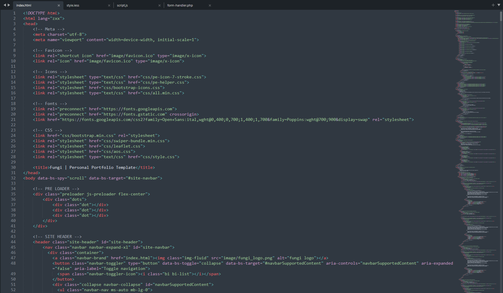
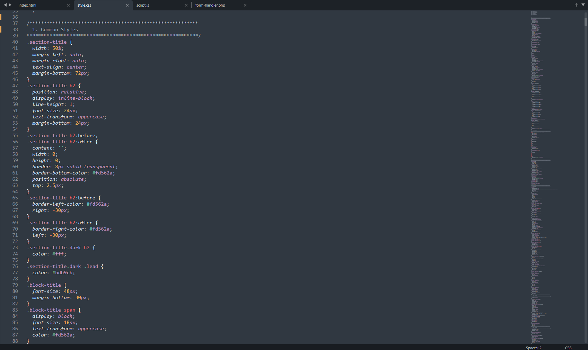
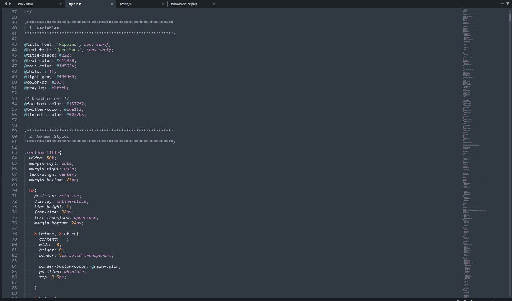
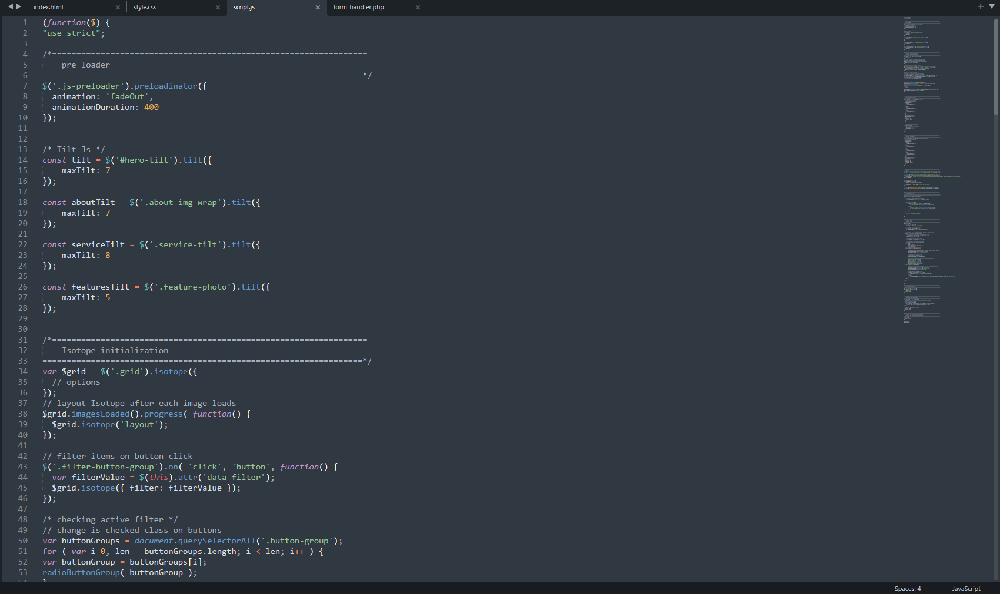
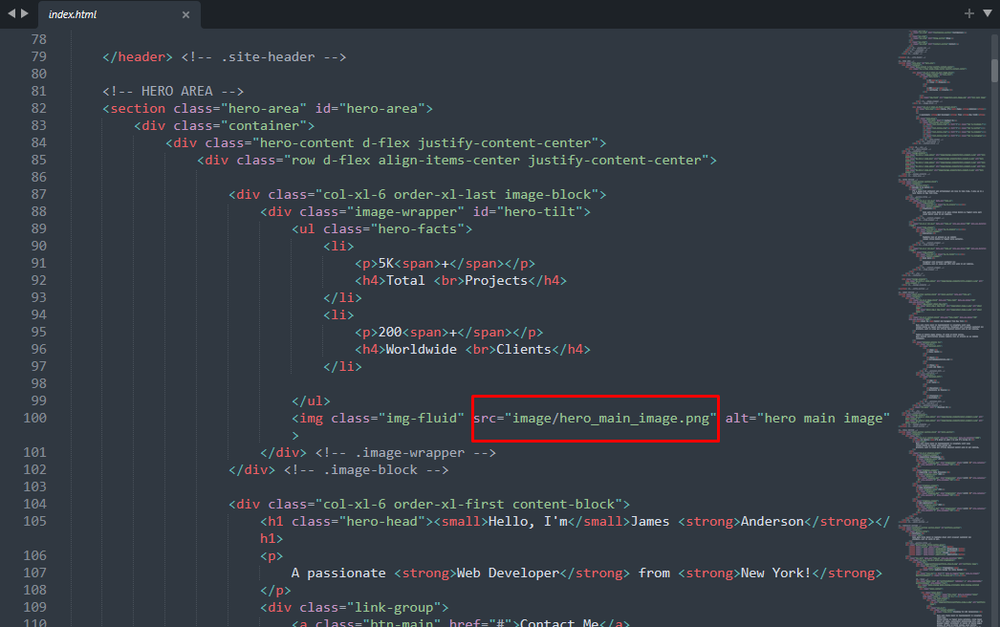
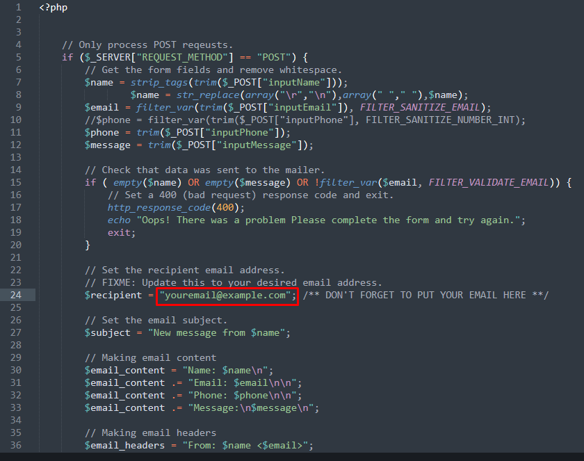

Fungi Documentation
Tempalte Name: Fungi
Template Author: eThemeStudio
Author URI: eThemeStudio
Date Created: November 22, 2022
Last Updated: December 13, 2023
Support: xuwelkhan@gmail.com
Version: 2.2.7
Tempalte Name: Fungi
Template Author: eThemeStudio
Author URI: eThemeStudio
Date Created: November 22, 2022
Last Updated: December 13, 2023
Support: xuwelkhan@gmail.com
Version: 2.2.7
Thank you for choosing Fungi - One Page Personal Portfolio Html Template
Fungi is a clean, elegant html template that is built on bootstrap 5. Fungi is a feature rich beautiful personal portfolio template that is best choice for your online presense. With very good design and features, Fungi comes with a one page style demo. Fungi has all necessary section and elements that is needed for a perfect Portfolio Website. You can easily showcase your bio, works, partners, blog posts in Fungi with details.
Any professional like developer, designer, freelancer, engineer, specialist, content writer, instructor, photographer, freelancer, politician, or some other expert can use Fungi to create his portfolio. Fungi is well documented, very easy to use, easily customizable HTML template that help you to build your portfolio in a few minutes.
Fungi is very easy to customize and all section is well commented. You can easily manipulate the code and layer order.
All files and folders are structured very well. Codes are well commented when necessary. Here is a screenshot to show how codes are organized. 
Here is the code structure of css file. 
Here is code structure for less file. 
And here is the code structure for Javascript file. 
We also want to note that, All structre, id or class names are very semantic and well explained. You will understand what they are and why they are used in the template with their name. Specially, the less file is very well structured, so you will get clear idea about the classes and their styles.
Fungi is a one page style html template and it has 22 demo variation.
Here is the list of demos that is included in Fungi
All demo has both light and dark version. In this way in becomes 20 demos.
Images are most important part of a modern website. We used images to make your website beautiful. We used some images as background image and some of them are used as <img > tag.
Adding image in Fungi is very easy. Go any html file and find <img > tag or go to your css file and find url() notation, just change the path of your desired image with the placeholder images. See an example - 
Iconfont is a great way to use as icon in modern web sites. We used Strock 7 icons, FontAwesome here in Fungi There is also Bootstrap Icons that comes with bootstrap. You can change any icon easily simply changing the class of that icon.
To know more about icons that are used in Fungi, please visit the link below.
We used two differennt fonts in Fungi both of them are free and availabe in Google Web Fonts! We used Open Sans as a text font and Poppins as our title font.
To know more about typography, please visit the typography section of Fungi's css file.
Fungi has a Full working PHP - JQUERY - AJAX based contact form that is good enough to use instantly in your website. All you need is to put your email address in the php file. See the screenshot below - 
Version 2.2.7 - December 13, 2023
Added: Home vcard added
Version 2.2.6 - July 12, 2023
Added: Home boxed added
Version 2.2.5 - April 20, 2023
Added: Home Minimal added
Version 2.2.4 - January 16, 2023
Added: Home Classic added Improved: Design Improved Fixed: Contact Form input color fixed
Version 2.2.3 - January 07, 2023
Added: Dark Version added Improved: Design Improved Fixed: Designer Demo Responsiveness Fixed
Version 2.2.2 - January 05, 2023
Added: Sidenav Demo added
Version 2.2.1 - January 03, 2023
Added: Freelancer Demo added
Version 2.2 - November 24, 2022
Added: Consultant Demo added
Version 2.1.0 - November 24, 2022
Added: Developer Demo added Added: Designer Demo added Improved: Design improved
Version 2.0 - November 23, 2022
Added: Ethical Hacker Demo added Added: Programmer Demo added Improved: Design improved
Version 1.0 - November 22, 2022
Fungi - One Page Personal Portfolio Html Template has been released
Fungi is built on cutting edge technology. We used minimum amount of resourse and scripts in Fungi to make it classic, minimal and fast loading. We are ever greatful to their respective creators, contributor and community.
We used lots of images in Fungi Some of them are premium and some of them are free.
Thank you again for choosing Fungi ! Feel free to contact our support to get best output from It !!
Have a Nice Day .. !!
xuwelkhan@gmail.com